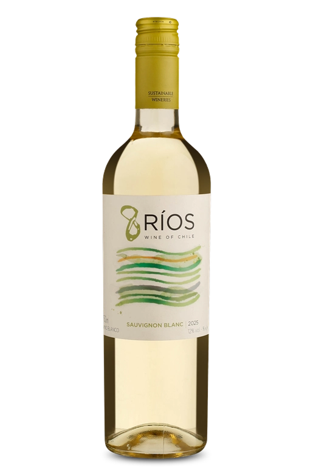

É um vinho delicado, o que o faz ser super gastronômico. Combina com uma grande variedade de comidas, inclusive as mais condimentadas.

Sendo reconhecida pelo seu perfil jovem e refrescante, este tinto é leve, bastante frutado e muito refrescante. Uma ótima opção para dias ensolarados para você que não abre mão de um vinho tinto.

Um vinho estruturado e aromático. Pode ser acompanhado com carnes vermelhas, massas com molhos encorpados, em jantares ou encontros descontraídos.

Neste exemplar, temos a Cabernet Sauvignon, rainha das uvas tintas, em um perfil jovem, fresco e com as características frutadas e herbais típicas da casta. Um exemplar agradável e descomplicado, perfeito para o dia a dia.

Elaborado com a Viura, também conhecida como Macabeo, esse é um vinho que apresenta aromas de frutas cítricas e secas. É fresco e fácil de beber.

Aromático e muito refrescante! Um vinho que está pronto para ser consumido em qualquer momento e em qualquer local, como aperitivo, ou acompanhado pratos leves, em casa, ou na praia.

Esse Sauvignon Blanc foi produzido com uvas cultivadas e selecionadas de vinhedos do Vale Central chileno, e teve passagem por tanques de aço inox para manter o frescor e as características naturais da uva. O vinho ideal para te acompanhar em momentos leves e descontraídos!

Seja como aperitivo, no sunset, na praia, no brunch, à beira da piscina, como welcome drink, ou em seus momentos de skin care, o Metropolitano Chardonnay é o vinho certo para você! O seu momento de descontração e relaxamento pede por Metropolitano!

Este é um espumante alegre, bastante frutado e muito refrescante, ideal para ser consumido como aperitivo, ou como escolha coringa para harmonizar com diversos pratos mais leves, seja à base de carnes brancas, peixes, frutos do mar ou até mesmo carnes vermelhas magras.

Um espumante alegre, fresco e persistente muito bacana para conhecer a região de Estremadura, assim como duas uvas autóctones e cheias de personalidade, uma escolha assertiva para brindar de forma autêntica.

Drizza é um trocadilho que descreve a brisa marítima que refresca os vales costeiros do Chile, uma brisa que nos permite refrescar as uvas. O espumante Drizza Brut é leve, delicado e muito refrescante. Aprecie-o em qualquer celebração!

Perfeita escolha para momentos leves e descontraídos. Espumante Drizza Rosé Brut é elegante, delicado e muito refrescante, uma opção super versátil para diversos momentos e harmonizações.